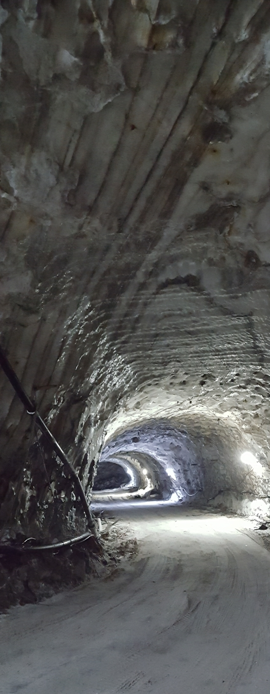

Miniera di Raffo

ITALIANO - Giacimento di salgemma puro sino al 99,9%, la cui formazione viene riferita ad un processo di dissoluzione e ricristallizzazione da depositi salini preesistenti. L’accumulo salino è tettonicamente inserito in sedimenti argillosi che ne hanno probabilmente preservato l’integrità. Attualmente il sale viene estratto industrialmente per scopi sia alimentari che di supporto ai processi imprenditoriali. Limitrofa, risulta significativa la vecchia miniera di Salinella, attualmente abbandonata. (Messiniano sup.)
INGLESE - I am Gaetano Ferrarelli